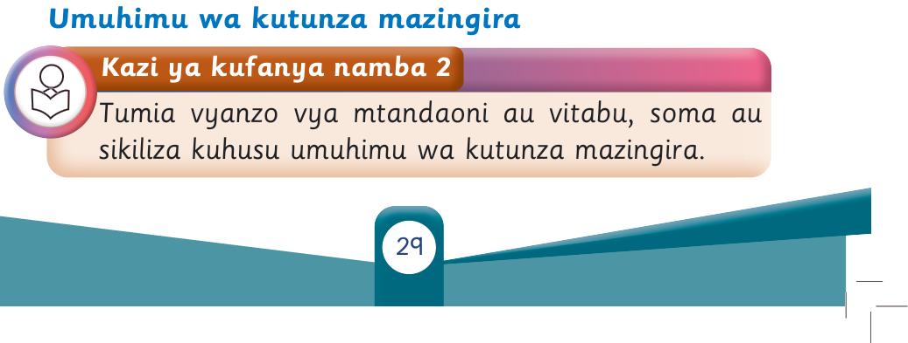

Umuhimu wa kutunza mazingira
Kazi ya kufanya namba 2
Tumia vyanzo vya mtandaoni au vitabu, soma au sikiliza kuhusu umuhimu wa kutunza mazingira.

29
Tumia vyanzo vya mtandaoni au vitabu, soma au sikiliza kuhusu umuhimu wa kutunza mazingira.
